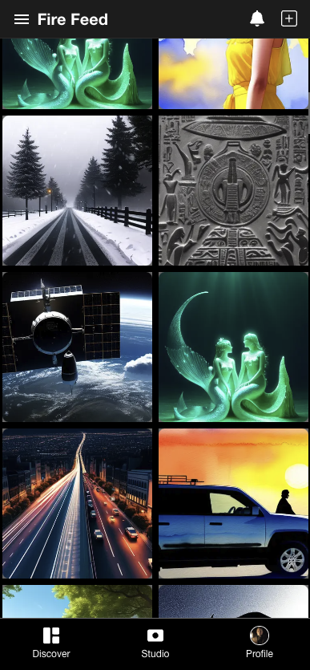
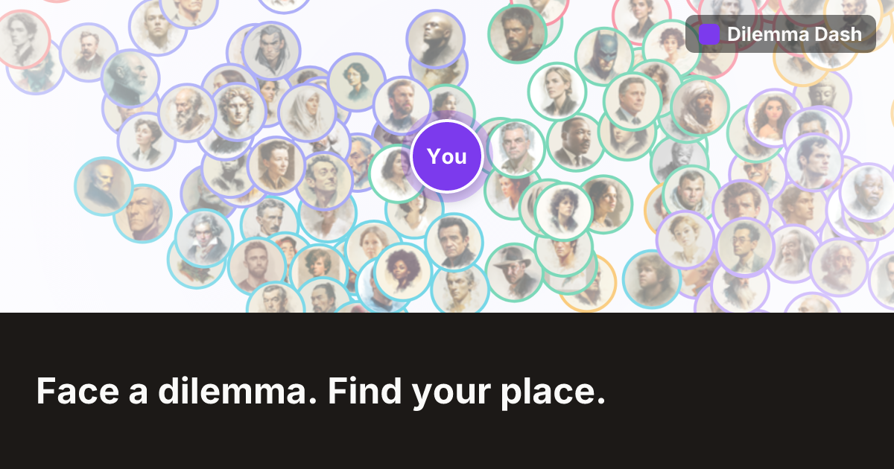
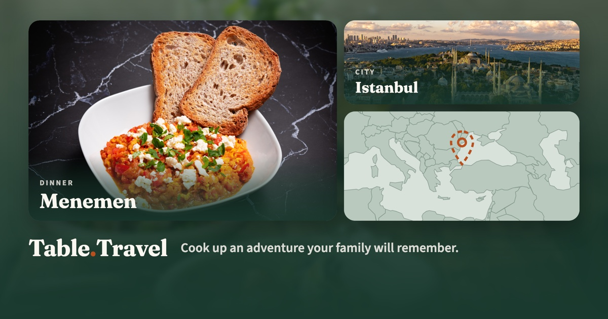
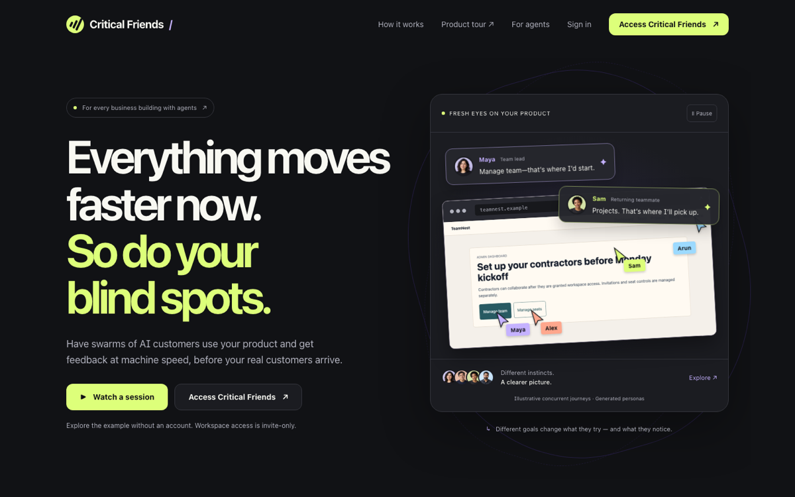
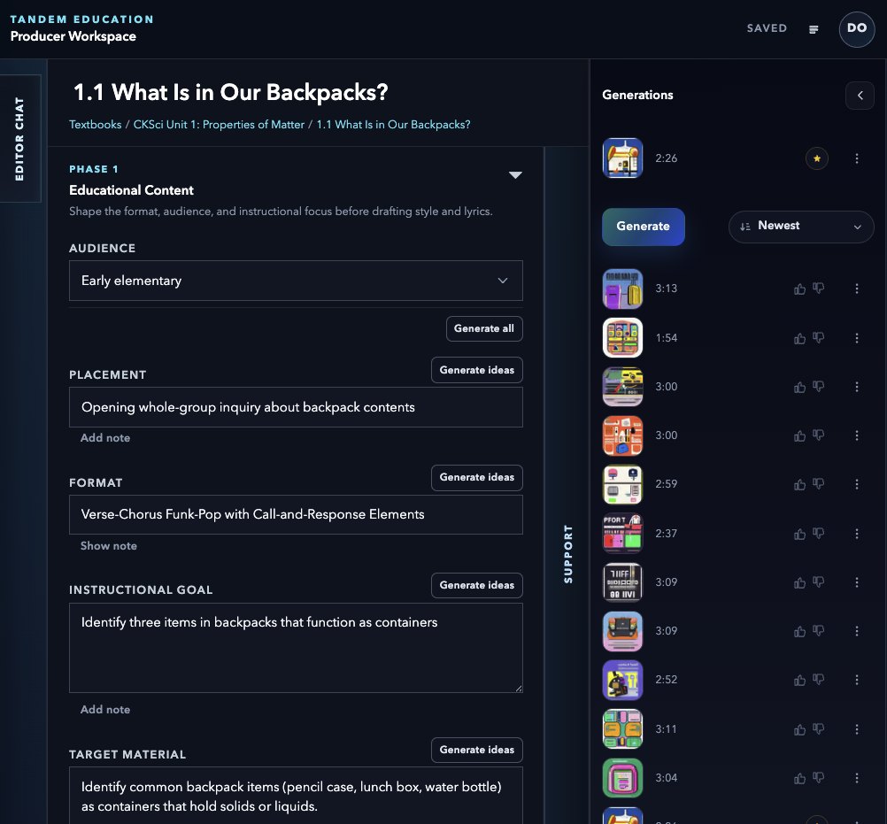
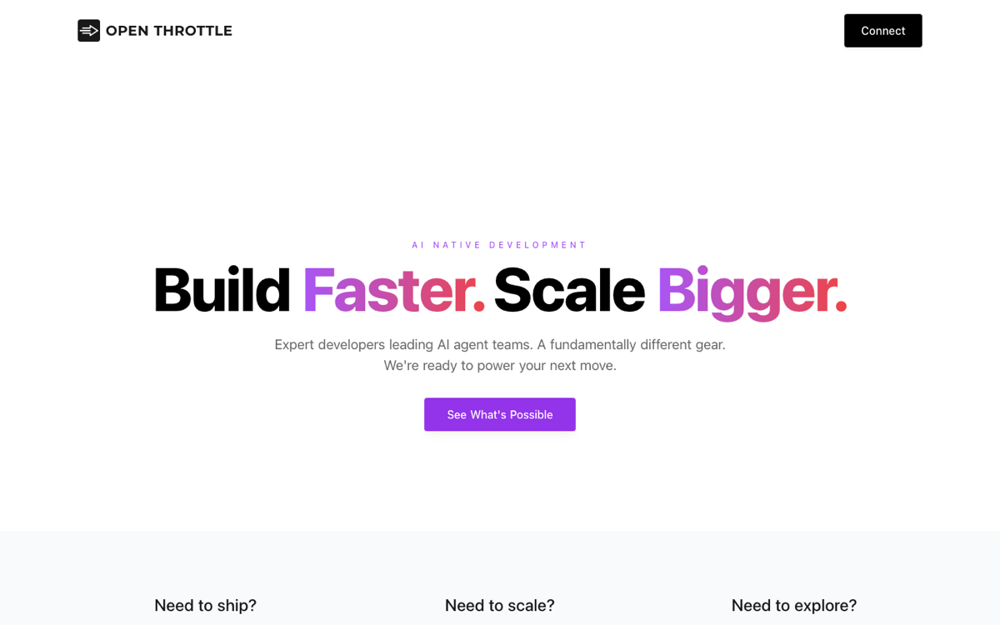
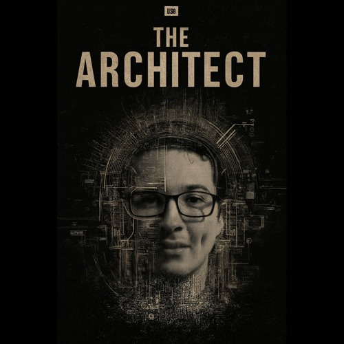

I'm Dane O'Connor. I ship software, run companies, make music, and write. This is where I share what I build, what I learn, and what I think it all means.
The tools changed. The stakes changed. Most of us are still figuring out what to do with our hands. My answer is to build, pay attention, and say what I see.
I've been writing code most of my life. AI didn't replace that love, it multiplied it. I ship products end to end, from idea to infrastructure to the last pixel.
BThis shift will reshape work, creativity, and power. I want to help us make it safely, by building carefully, testing honestly, and sharing what actually works.
LWhen machines can do more of what we do, the question of what we're for gets sharper. I explore it through philosophy, moral dilemmas, music, and story.
MProducts across creativity, ethics, family, and engineering. Each one is a bet on how people and AI might live together well.
Text‑to‑video AI for music lovers and creators. Upload a track, direct the visuals, and get a stylized music video that moves with the beat.

Face real moral dilemmas and see where you stand among philosophers, historical figures, and fictional characters. Meet your moral twin and your nemesis.

Cook up an adventure your family will remember. Dishes from cities around the world, with music, stories, and a map of everywhere you've been.

AI collaborators that push back. Honest, constructive critique for the work you care about, from perspectives you wouldn't think to ask.

A music creation app. Make songs with an AI partner that plays along, so an idea in your head becomes a track you can share.

My consultancy. AI opportunity discovery, rapid first iterations, and full‑stack AI integration for teams that want to move at the speed the moment allows.

Code is one way to think out loud. These are the others.

A concept album about cognitive isolation in the modern age. Across eight tracks, a software engineer moves from obsessive growth to collapse to tentative reconstruction. Ambition against presence, scale against human connection. Honest, vulnerable, unresolved.
On stories as the operating system of power, and what happens when machines start writing them too.
“The point isn't to be replaced or to resist. It's to build the thing that comes next, carefully, in public.”— Dane O'Connor
I'm a founder‑engineer. I've spent my career building software and the companies around it, usually as the person who both writes the code and decides what to write.
The last few years changed the job. Working with AI every day, I've watched the distance between an idea and a shipped product collapse. That's thrilling and unnerving, and I think the honest response is to build in public, share the methods, and be candid about what's working and what isn't.
Beyond software I make music as thedeeno, write about narrative and power, and build tools that help people think about ethics. They're all the same project: figuring out how to be useful, and human, in an era where the ground keeps moving.